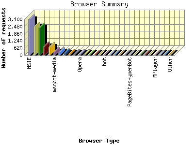
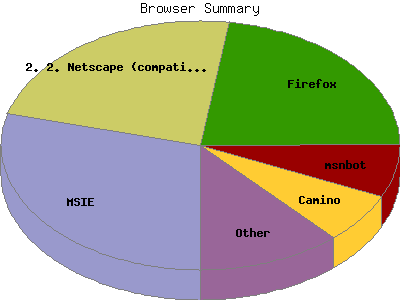

Report generated by Analog 6.0 and Report Magic 2.21
|
Web Server Statistics for "Harish Narayanan (hnarayan) - December 2006" Report generated by Analog 6.0 and Report Magic 2.21 |
The Browser Summary identifies the most popular web browsers used to visit
this site.
Browsers are broken down by recognized categories such as
Netscape Navigator/Communicator, Microsoft Internet Explorer, WebTV, Opera
and the like. Within each category is also a subgroup by version number
such as 'MSIE 5.0' or 'Netscape 4.5'.
This report shows all results. This report is sorted by number of requests.


| Browser Type | Number of requests | Number of bytes transferred | Percentage of the bytes | Percentage of the requests | |
|---|---|---|---|---|---|
| 1. | MSIE | 3,092 | 349.578 MB | 28.21% | 29.04% |
| MSIE/6 | 2,586 | 309.128 MB | 24.95% | 24.29% | |
| MSIE/7 | 397 | 32.915 MB | 2.66% | 3.73% | |
| MSIE/5 | 109 | 7.535 MB | 0.61% | 1.02% | |
| 2. | Netscape (compatible) | 2,484 | 251.036 MB | 20.26% | 23.33% |
| 3. | Firefox | 2,395 | 130.531 MB | 10.53% | 22.50% |
| Firefox/1 | 1,410 | 81.644 MB | 6.59% | 13.24% | |
| Firefox/2 | 981 | 48.248 MB | 3.89% | 9.21% | |
| Firefox/0 | 4 | 654.712 KB | 0.05% | 0.04% | |
| 4. | msnbot | 740 | 66.059 MB | 5.33% | 6.95% |
| msnbot/1 | 740 | 66.059 MB | 5.33% | 6.95% | |
| 5. | Camino | 692 | 71.674 MB | 5.78% | 6.50% |
| Camino/1 | 690 | 71.660 MB | 5.78% | 6.48% | |
| Camino/0 | 2 | 15.011 KB | 0.00% | 0.02% | |
| 6. | msnbot-media | 276 | 75.880 MB | 6.12% | 2.59% |
| msnbot-media/1 | 276 | 75.880 MB | 6.12% | 2.59% | |
| 7. | Safari | 238 | 10.273 MB | 0.83% | 2.23% |
| Safari/419 | 141 | 6.176 MB | 0.50% | 1.32% | |
| Safari/312 | 94 | 2.485 MB | 0.20% | 0.88% | |
| 8. | Mozilla | 156 | 3.519 MB | 0.28% | 1.47% |
| Mozilla/1 | 150 | 3.474 MB | 0.28% | 1.41% | |
| 9. | FAST Enterprise Crawler 6 used by ENSCO, Inc. (chenail.brett@ensco.com) | 138 | 62.918 MB | 5.08% | 1.30% |
| 10. | Jyxobot | 82 | 2.318 MB | 0.19% | 0.77% |
| Jyxobot/1 | 82 | 2.318 MB | 0.19% | 0.77% | |
| 11. | Opera | 79 | 6.707 MB | 0.54% | 0.74% |
| Opera/9 | 77 | 6.693 MB | 0.54% | 0.72% | |
| Opera/8 | 2 | 15.011 KB | 0.00% | 0.02% | |
| 12. | psbot | 68 | 1.945 MB | 0.16% | 0.64% |
| psbot/0 | 68 | 1.945 MB | 0.16% | 0.64% | |
| 13. | FAST Enterprise Crawler 6 | 52 | 30.197 MB | 2.44% | 0.49% |
| FAST Enterprise Crawler 6 / | 52 | 30.197 MB | 2.44% | 0.49% | |
| 14. | ia_archiver | 18 | 15.027 MB | 1.21% | 0.17% |
| 15. | Konqueror | 16 | 120.086 KB | 0.01% | 0.15% |
| Konqueror/3 | 16 | 120.086 KB | 0.01% | 0.15% | |
| 16. | bot | 10 | 119.176 KB | 0.01% | 0.09% |
| bot/1 | 10 | 119.176 KB | 0.01% | 0.09% | |
| 17. | Yahoo-MMCrawler | 9 | 0.000 B | 0.00% | 0.09% |
| 18. | Netscape | 6 | 1.319 MB | 0.11% | 0.06% |
| Netscape/4 | 2 | 3.641 KB | 0.00% | 0.02% | |
| 19. | Jigsaw | 6 | 29.881 KB | 0.00% | 0.06% |
| Jigsaw/2 | 6 | 29.881 KB | 0.00% | 0.06% | |
| 20. | envolk | 6 | 10.922 KB | 0.00% | 0.06% |
| envolk/1 | 6 | 10.922 KB | 0.00% | 0.06% | |
| 21. | PageBitesHyperBot | 6 | 40.213 KB | 0.00% | 0.06% |
| PageBitesHyperBot/600 | 6 | 40.213 KB | 0.00% | 0.06% | |
| 22. | ConveraCrawler | 6 | 37.406 KB | 0.00% | 0.06% |
| ConveraCrawler/0 | 6 | 37.406 KB | 0.00% | 0.06% | |
| 23. | Exabot | 5 | 61.978 KB | 0.01% | 0.05% |
| Exabot/3 | 5 | 61.978 KB | 0.01% | 0.05% | |
| 24. | W3C_Validator | 5 | 46.825 KB | 0.00% | 0.05% |
| W3C_Validator/1 | 5 | 46.825 KB | 0.00% | 0.05% | |
| 25. | FAST-WebCrawler | 4 | 9.210 KB | 0.00% | 0.04% |
| FAST-WebCrawler/3 | 4 | 9.210 KB | 0.00% | 0.04% | |
| 26. | MPlayer | 4 | 103.924 MB | 8.39% | 0.04% |
| 27. | Pagebull http: | 4 | 32.814 KB | 0.00% | 0.04% |
| Pagebull http://www | 4 | 32.814 KB | 0.00% | 0.04% | |
| 28. | RMA | 3 | 4.084 MB | 0.33% | 0.03% |
| 29. | Wget | 3 | 50.940 MB | 4.11% | 0.03% |
| Wget/1 | 3 | 50.940 MB | 4.11% | 0.03% | |
| 30. | OmniExplorer_Bot | 3 | 5.461 KB | 0.00% | 0.03% |
| OmniExplorer_Bot/6 | 3 | 5.461 KB | 0.00% | 0.03% | |
| 31. | Twiceler www.cuill.com | 3 | 12.404 KB | 0.00% | 0.03% |
| Twiceler www.cuill.com/twiceler/robot | 3 | 12.404 KB | 0.00% | 0.03% | |
| 32. | www.fi crawler, contact crawler@www.fi | 2 | 10.584 KB | 0.00% | 0.02% |
| 33. | voyager | 2 | 33.722 KB | 0.00% | 0.02% |
| voyager/1 | 2 | 33.722 KB | 0.00% | 0.02% | |
| 34. | Jakarta Commons-HttpClient | 2 | 100.230 KB | 0.01% | 0.02% |
| Jakarta Commons-HttpClient/3 | 2 | 100.230 KB | 0.01% | 0.02% | |
| 35. | WordPress | 2 | 10.654 KB | 0.00% | 0.02% |
| WordPress/2 | 2 | 10.654 KB | 0.00% | 0.02% | |
| 36. | Lynx | 2 | 12.475 KB | 0.00% | 0.02% |
| Lynx/2 | 2 | 12.475 KB | 0.00% | 0.02% | |
| 37. | Scooter | 2 | 16.029 KB | 0.00% | 0.02% |
| Scooter/3 | 2 | 16.029 KB | 0.00% | 0.02% | |
| 38. | MQBOT | 2 | 10.584 KB | 0.00% | 0.02% |
| MQBOT/Nutch-0 | 2 | 10.584 KB | 0.00% | 0.02% | |
| 39. | CazoodleBot | 2 | 3.641 KB | 0.00% | 0.02% |
| CazoodleBot/Nutch-0 | 2 | 3.641 KB | 0.00% | 0.02% | |
| 40. | SGH-Z130 SHP | 1 | 5.292 KB | 0.00% | 0.01% |
| SGH-Z130 SHP/VPP/R5 | 1 | 5.292 KB | 0.00% | 0.01% | |
| 41. | hfhtodshbbekf wrktx qtWhyWkhdv | 1 | 8.633 KB | 0.00% | 0.01% |
| 42. | bwknnurrasc pdprdhdlhx9 | 1 | 8.633 KB | 0.00% | 0.01% |
| 43. | nslnOfqnr yndbehuiitrbkfwkckr | 1 | 8.633 KB | 0.00% | 0.01% |
| 44. | GetRight | 1 | 328.184 KB | 0.03% | 0.01% |
| 45. | nhos abgt1vomtjd flt1jsa | 1 | 10.152 KB | 0.00% | 0.01% |
| 46. | ylnpof5q5ptyhxtnonssxtjcgceteiirnj | 1 | 28.457 KB | 0.00% | 0.01% |
| 47. | Adaxas Spider (http: | 1 | 1.820 KB | 0.00% | 0.01% |
| Adaxas Spider (http://www | 1 | 1.820 KB | 0.00% | 0.01% | |
| 48. | yikdsrsiyvvlluvbjkhe | 1 | 8.633 KB | 0.00% | 0.01% |
| 49. | Nokia6820 | 1 | 1.820 KB | 0.00% | 0.01% |
| Nokia6820/2 | 1 | 1.820 KB | 0.00% | 0.01% | |
| 50. | Factbot | 1 | 0.000 B | 0.00% | 0.01% |
| Factbot/1 | 1 | 0.000 B | 0.00% | 0.01% | |
| 51. | nicebot | 1 | 11.337 KB | 0.00% | 0.01% |
| 52. | NetResearchServer | 1 | 1.820 KB | 0.00% | 0.01% |
| NetResearchServer/4 | 1 | 1.820 KB | 0.00% | 0.01% | |
| 53. | webbot(+http: | 1 | 5.292 KB | 0.00% | 0.01% |
| webbot(+http://webbot | 1 | 5.292 KB | 0.00% | 0.01% | |
| 54. | ssfkcnnr Yrgj otrvgiknvvbhvguglftaibdt | 1 | 5.292 KB | 0.00% | 0.01% |
| 55. | gvpichoseiGueyg onhxhymcytnGiG | 1 | 8.633 KB | 0.00% | 0.01% |
| 56. | Python-urllib | 1 | 1.820 KB | 0.00% | 0.01% |
| Python-urllib/2 | 1 | 1.820 KB | 0.00% | 0.01% | |
| 57. | WorQmada | 1 | 1.820 KB | 0.00% | 0.01% |
| WorQmada/1 | 1 | 1.820 KB | 0.00% | 0.01% | |
| 58. | libwww-perl | 1 | 1.820 KB | 0.00% | 0.01% |
| libwww-perl/5 | 1 | 1.820 KB | 0.00% | 0.01% | |
| 59. | Links (2.1pre18; Linux 2.6.16.11 i686; 80x24) | 1 | 5.292 KB | 0.00% | 0.01% |
| 60. | NutchCVS | 1 | 1.820 KB | 0.00% | 0.01% |
| NutchCVS/0 | 1 | 1.820 KB | 0.00% | 0.01% | |
| 61. | FAST Enterprise Crawler 6 used by ENSCO (chenail.brett@ensco.com) | 1 | 5.292 KB | 0.00% | 0.01% |
This report was generated on January 4, 2007 13:06.
Report time frame December 1, 2006 00:13 to December 31, 2006 23:54.
| Web statistics report produced by: | |
 Analog 6.0 Analog 6.0 |  Report Magic 2.21 Report Magic 2.21 |